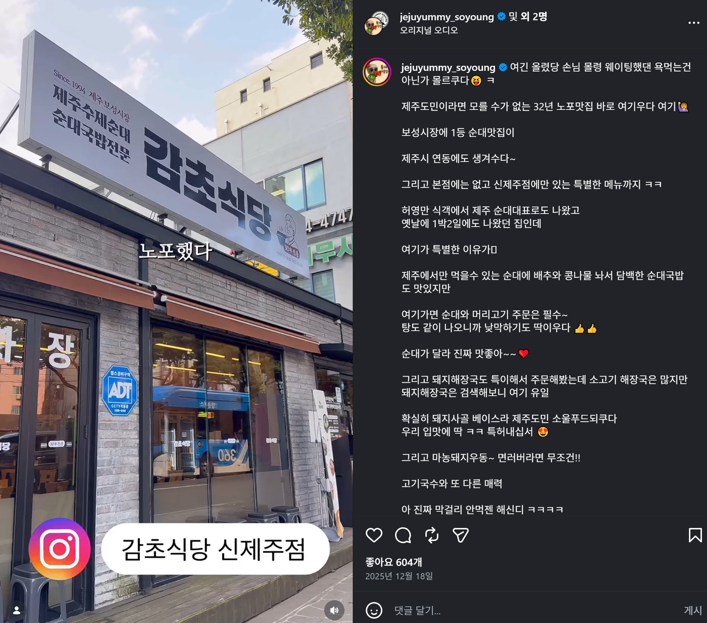
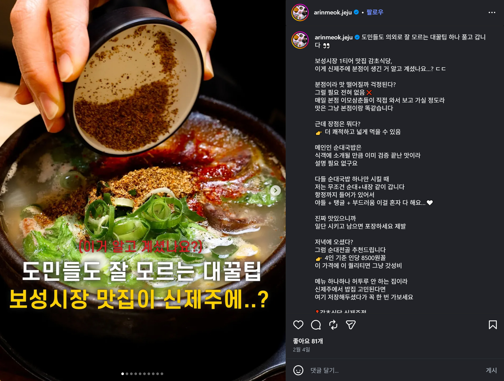

NAVER REVIEW
★★★★★
“제주 여행 마지막날 우연히 들렸는데 정말 맛있게 먹었습니다. 따뜻한 국물 한 그릇이 여행의 마지막을 더 좋게 만들어줬어요.”
GAMCHO RESTAURANT · JEJU
한 그릇의 맛과 함께 오래 남은 소중한 이야기
REVIEW
제주에서의 따뜻한 한 끼가 좋은 기억으로 남을 수 있도록,
손님들이 남겨주신 이야기를 담았습니다.
BEST REVIEW
감초식당을 직접 경험한 분들의 이야기입니다.
“제주 여행 마지막날 우연히 들렸는데 정말 맛있게 먹었습니다. 따뜻한 국물 한 그릇이 여행의 마지막을 더 좋게 만들어줬어요.”
“관광객만 가는 식당이 아니라 제주 로컬의 분위기를 느낄 수 있어서 좋았습니다. 음식도 맛있고 직원분들도 친절했어요.”
“방문하고 나서 왜 오래 사랑받는 곳인지 알 것 같았습니다. 제주에서 든든하게 한 끼 먹고 싶을 때 다시 찾고 싶어요.”
PHOTO REVIEW
손님들의 소중한 순간을 사진으로 만나보세요.



REVIEW WITH US
감초식당에서의 소중한 경험을 다른 분들과도 나눠주세요.
VISIT GAMCHO
감초식당 신제주점에서 따뜻한 한 끼를 만나보세요.